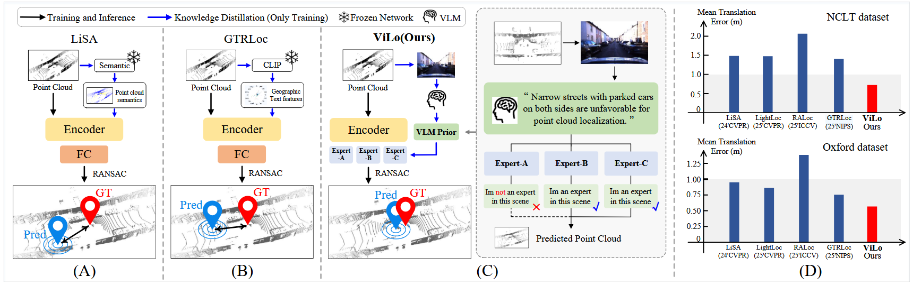
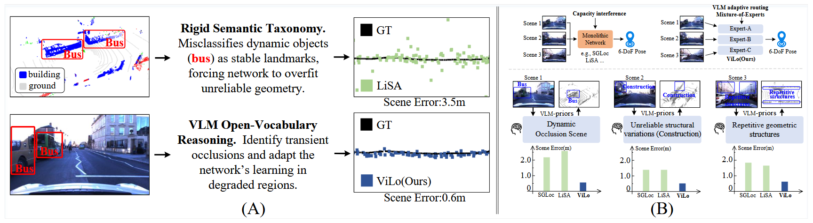
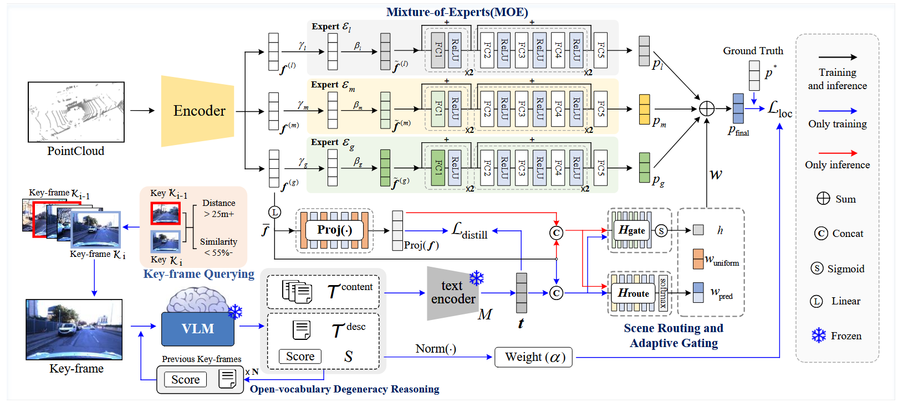
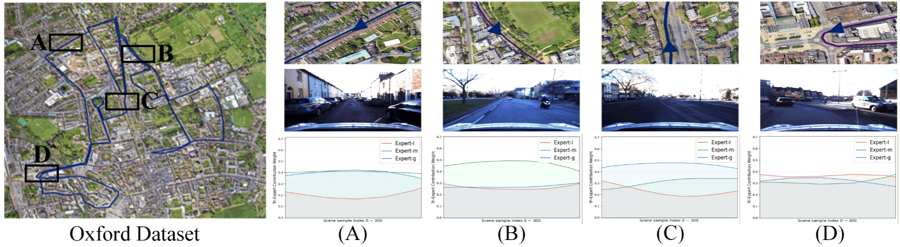

See what matters
A vision-language model reasons about scene degradations at selected key frames during training.
Learning to localize across changing scenes
A scene-adaptive approach that learns from vision-language reasoning during training and localizes with LiDAR alone at inference.
01 / Overview
Conventional scene-coordinate regression often asks one network to learn from every environment in the same way. Occlusions, changing structures, and ambiguous geometry make that difficult.
A vision-language model reasons about scene degradations at selected key frames during training.
Scene priors guide local, mid-range, and global experts rather than forcing one network to fit all conditions.
Cross-modal distillation transfers that guidance into the 3D backbone. Images and the VLM are not needed at inference.

02 / The motivation
Rigid semantic labels can confuse transient objects with useful landmarks. ViLo uses open-vocabulary scene reasoning to recognize when geometry is unreliable, then adapts how its experts learn.
INTERACTIVE EXPLAINER
Select a scene to see the qualitative expert emphasis described in the paper. This is a conceptual animation, not a replay of measured per-frame weights.
A moving bus hides stable structures in a narrow street.
Treat transient occlusion as unreliable geometry.
Mid-range and global context receive more emphasis in the paper's occluded-street example.

03 / Method
The expensive scene reasoning stays in the training pipeline. The deployed model uses only point clouds to estimate a global 6-DoF pose.
Query selected visual key frames and reuse previous context to obtain temporally consistent, open-vocabulary degradation priors.
TRAININGRoute point-cloud features through three scale-aware experts, with a confidence gate that softens uncertain routing.
TRAINING + INFERENCEAlign LiDAR features with the scene prior so the VLM and camera imagery can be removed at deployment.
LIDAR-ONLY INFERENCE
04 / Evidence
Mean translation error on the Oxford RobotCar and NCLT test sets, compared with GTRLoc in the supplied manuscript. Lower is better.
33 ms per frame in the paper's Oxford runtime comparison.
53 ms per frame in the paper's NCLT runtime comparison.
Source: ViLo manuscript, Tables 1–3. Error reductions are relative to the GTRLoc mean translation errors shown above; runtime figures are from the paper's test setup.
05 / Interpretability
Figure 7 visualizes how the contribution of local, mid-range, and global experts changes across representative Oxford regions. Occluded streets favor broader context; vegetation-heavy areas emphasize mid-range structure; open roads rely more on global context.
Explore Figure 7 at full size
06 / Read & share
ViLo: LiDAR Localization with Vision-Language Priors · NeurIPS 2026. The full manuscript includes methodology, benchmarks, ablations, and qualitative visualizations.
Code release: The GitHub code is being organized for public release. A code link will be added when it is ready.
Questions? mihoo@stu.xmu.edu.cn